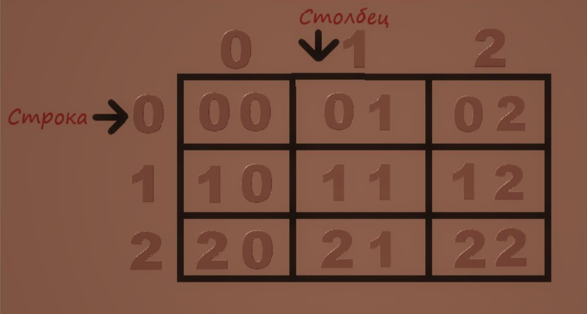

Двумерные массивы
Если вы ещё не знакомы с топиком про “одномерные массивы”, рекомендую ознакомиться с этой темой, иначе
некоторые моменты данной статьи для вас могут быть сложными и непонятными.
/*рекомендация ознакомится с темой*/
В данной статье не будет представлена информация о банальных вещах, которые вы и так уже должны знать,
данная статья- это выжимка материалов с различных источников, которые, по мнению автора, помогут вам разобраться,
а главное - понять, что и как.
Минимум теории.
Массив это структура данных, представленная в виде группы ячеек одного типа, объединенных под одним единым именем. Массивы используются для обработки большого количества однотипных данных.
Имя массива является указателем.Элементами массива могут быть данные любого типа. Массивы могут иметь как одно, так и более одного измерений. В зависимости от количества измерений массивы делятся на одномерные массивы, двумерные массивы, трёхмерные массивы и так далее до n-мерного массива.
Двумерный массив представляет собой нечто вроде координатной сетки или матрицы с индексами (вы их пройдете на курсе линала), как в одномерных массивах.  Как и в одномерных массивах элементы считаются с нулевого значения, соответственно, что в обычной матрице [1;1] в нашем любимом программировании [0;0], это важно понимать для хорошего усвоения материала.
Практическое применение
Моё субъективное мнение таково, что лучший способ что-то понять - это смотреть и тыкать код своими ручонками, следовательно, я приведу в пример несколько задач с пояснениями. (Задачи взяты с курса Stepik для простоты разъяснения, ссылки будет в конце статьи).
Звадача 1
Дано нечетное число n, не превосходящее 15. Создайте двумерный массив из n×n элементов, заполнив его символами "." (каждый элемент массива является строкой из одного символа). Затем заполните символами "*" среднюю строку массива, средний столбец массива, главную диагональ и побочную диагональ. В результате "*" в массиве должны образовывать изображение звездочки. Выведите полученный массив на экран, разделяя элементы массива пробелами.
Решение
#include <iostream>
using namespace std;
int main() {
int n;
cin >> n;
int a[15][15];
// обработка
for (int i = 0; i < n; i++) {
for (int j = 0; j < n; j++) {
if (i == j || i == n - 1 - j || i == n / 2 || j == n / 2){
a[i][j] = 1;
else a[i][j] = 0;
}
}
}
for (int i = 0; i < n; i++) {
for (int j = 0; j < n; j++) {
if (a[i][j] == 0) cout << "." << " ";
else cout << "*" << " ";
}
cout << endl;
}
return 0;
}
Звадача 2
Дано число n, не превосходящее 10, и массив размером n × n. Проверьте, является ли этот массив симметричным относительно главной диагонали. Выведите слово “YES”, если массив симметричный, и слово “NO” в противном случае.
Решение
#include <iostream>
#include <cmath>
using namespace std;
int main() {
int n;
bool symmetric;
cin >> n;
int a[10][10];
// заполнение
for (int i = 0; i < n; i++) {
for (int j = 0; j < n; j++) {
cin >> a[i][j];
}
}
// обработка
symmetric = true;
for (int i = 0; i < n; i++) {
for (int j = 0; j < n; j++) {
if (a[i][j] != a[j][i]) symmetric = false;
}
}
// вывод
if (symmetric) cout << "YES";
else cout << "NO";
return 0;
}
Итак, статья подходит к концу и на данный момент, если вы были достаточно внимательны и делали всё то, что я рекомендовал у вас должно было сформироваться минимальное понимание того, что такое двумерный массив, как его инициализировать и как с ним работать.
Дополнительные материалы для более подробного изучения данного топика представлены ниже.
Спасибо за внимание.
Теоретический материал о двумерных массивах .
Для тех, кому интересно узнать о двумерных массивах более подробно.
Курс с сайта Stepik о основах языка C++.
git